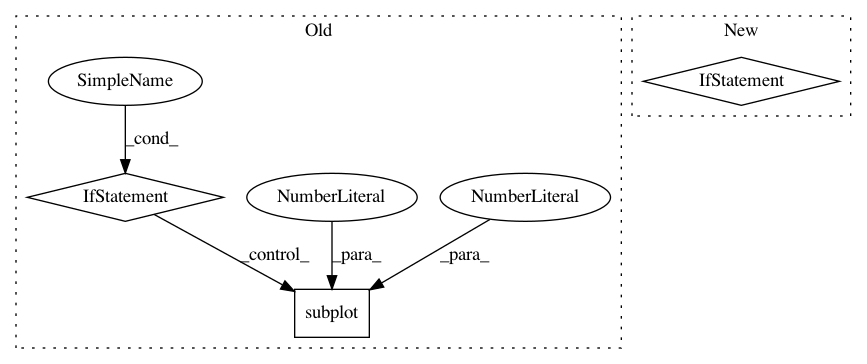

313eaca23b01fb8dd0a699bf05cdae99a60899b3,cellprofiler/modules/convertobjectstoimage.py,ConvertObjectsToImage,display,#ConvertObjectsToImage#Any#Any#,158
Before Change
figure.subplot_imshow_bw(1, 0, pixel_data,
self.image_name.value,
sharexy=figure.subplot(0, 0))
elif pixel_data.shape[1] == 2:
figure.subplot_imshow_grayscale(1, 0, pixel_data,
self.image_name.value,
sharexy=figure.subplot(0, 0))
else:
figure.subplot_imshow_grayscale(1, 0, pixel_data,
self.image_name.value,
After Change
dimensions = workspace.display_data.dimensions
cmap = None if self.image_mode == "Color" else "gray"
figure.set_subplots((2, 1), dimensions=dimensions)
// TODO: volumetric IJV
In pattern: SUPERPATTERN
Frequency: 3
Non-data size: 3
Instances
Project Name: CellProfiler/CellProfiler
Commit Name: 313eaca23b01fb8dd0a699bf05cdae99a60899b3
Time: 2016-10-11
Author: mcquin@broadinstitute.org
File Name: cellprofiler/modules/convertobjectstoimage.py
Class Name: ConvertObjectsToImage
Method Name: display
Project Name: neurodsp-tools/neurodsp
Commit Name: 5196910e726c04648f5cffae5f50ecd3171539ce
Time: 2019-03-17
Author: tdonoghue@ucsd.edu
File Name: neurodsp/plts/filt.py
Class Name:
Method Name: plot_frequency_response
Project Name: nilearn/nilearn
Commit Name: 9b9095f877f603d91495c72f91e4fddf61f1724e
Time: 2019-07-22
Author: jerome@dockes.org
File Name: examples/02_decoding/plot_haxby_stimuli.py
Class Name:
Method Name: